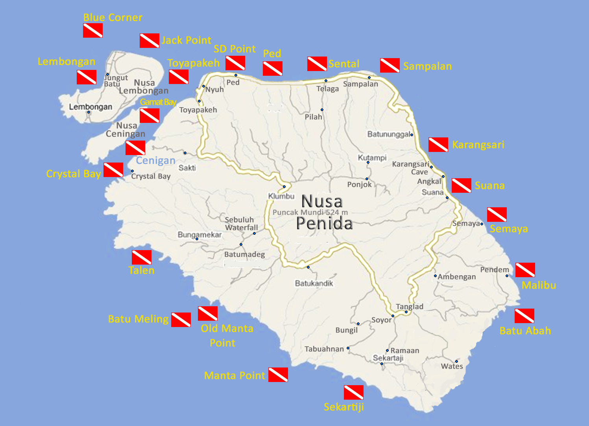
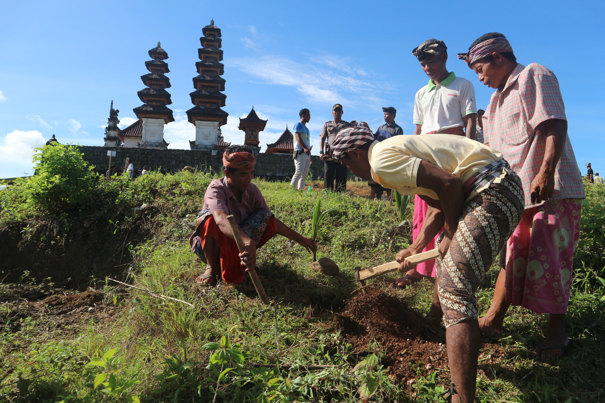

Tentang Nusa Penida
Nusa penida apa dan dimana ?
Nama nusa penida saat ini mungkin sedikit asing bagi wisatawan yang liburan di bali Berikut sedikit ulasan tentang pulau yang terkenal dengan ikon ikan mola mola ini
Nusa Penida merupakan sebuah pulau kecil yang menjadi bagian dari wilayah Kabupaten klungkung. dengan luas wilayah : 315 Km2. Nusa penida merupakan sebuah Kecamatan Nusa Penida terdiri dari tiga kepulauan yaitu pulau Nusa Penida, Nusa Lembongan dan Pulau Ceningan. Pulau Nusa Penida bisa ditempuh dari empat tempat yaitu lewat Benoa lewat Sanur dengan menumpang perahu jarak tempuh + 1,5 Jam perjalanan..
Geografi dan Jumlah Penduduk
Lewat Kusamba dengan menumpang Jukung jerak tempuh +1,5 jam perjalanan. sedangkan kalau lewat Padangbai dengan menumpang Kapal Boat yang jarak tempuh + 1 jam perjalanan.
Berdasarkan hasil registrasi penduduk pada tahun 2008, jumlah penduduk di kawasan barat Pulau Nusa Penida adalah 24003 jiwa. Jumlah penduduk di Kecamatan Nusa Penida 47.448 jiwa Secara umum kondisi Topografi Nusa Penida tergolong landai sampai berbukit
Mata Pencarian Penduduk
Semakin ke selatan kemiringan lerengnya semakin bergelombang. Demikian juga pulau Lembongan bagian Utara merupakan lahan datar Sedangkan Pulau Ceningan memililiki kondisi tanah bergelombang dan berbukit.
Mata pencaharian penduduk adalah pertanian yaitu petani rumput laut dan sektor perikanan merupakan mata pencaharian akan tetapi mulai dari awal 1990an banyak penduduknya yang beralih propesi menjadi pekerja pariwisata seperti pemandu wisata, diving guide, driver boat maupun transportasi untuk menunjang sector pariwisata yang mulai berkembang